Orca
Service Monitor & Uptime Alerts
User Guide
Monitor payment gateways, carriers, ERPs and your own infrastructure from inside Magento,
with uptime history, incidents and email alerts.

Your store depends on services it doesn't control: payment gateways, shipping carriers, ERPs, search, Redis, RabbitMQ. Orca Service Monitor checks them from your Magento server itself, using the same network, DNS, firewall rules, proxy and TLS setup as your integrations. It catches problems an external uptime tool never sees, such as a whitelisted IP that changed, a firewall rule or an outdated CA bundle.
The module only makes requests to the services you choose to monitor. It never sends store data to third parties.
| Magento | Magento Open Source or Adobe Commerce 2.4.7 or later (Mage-OS 1.0 or later) |
|---|---|
| PHP | 8.2, 8.3, 8.4 or 8.5 |
| Cron | A working Magento cron. Checks run every minute in their own
orca_service_monitor cron group. |
| Magento must be able to send email for the alerts. | |
| Theme | Admin only: works with any storefront theme, including Hyvä. |
Back up your code and database and, on a production store, enable maintenance mode before installing.
After purchasing the extension, it is available with your Adobe Commerce Marketplace access keys:
composer require orca/module-service-monitor
bin/magento module:enable Orca_ServiceMonitor
bin/magento setup:upgrade
bin/magento setup:di:compile
bin/magento setup:static-content:deploy
bin/magento cache:flushapp/code/Orca/ServiceMonitor in your Magento root.registration.php is located at
app/code/Orca/ServiceMonitor/registration.php.bin/magento commands listed above, from module:enable on.bin/magento deploy:mode:set production instead of
setup:di:compile and setup:static-content:deploy.bin/magento cron:install).Go to Stores › Configuration › Orca › Service Monitor, or System › Service Monitor › Settings.
| Group | Setting | Default | Description |
|---|---|---|---|
| General | Enable Scheduled Checks | Yes | Turns the cron checks on or off. Check Now and the CLI keep working. |
| Concurrent Checks | 10 | HTTP and TCP checks run in parallel. | |
| Maximum Checks per Run | 100 | Due monitors checked by each cron run. | |
| Warn When Checks Haven't Run For (Minutes) | 10 | Shows an admin message when the cron stops running the checks. | |
| Show Dashboard Widget | Yes | Shows the dashboard widget. Turn it off to hide it for every admin user. | |
| Email Notifications | Enable | Yes | Turns all alert emails on or off. |
| Recipients, Sender | None, General Contact | Default recipients, comma separated. A monitor can have its own. | |
| Templates | Module templates | Down, recovered, degraded and flapping emails. | |
| Flapping Detection | Incidents That Mark a Monitor as Flapping | 4 | A monitor with flapping detection enabled is flapping when it opens this many incidents within the window. |
| Within (Minutes) | 60 | ||
| Service Discovery | Check Interval of Created Monitors | 15 minutes | Interval of the monitors created from Discover Services. |
| Create Monitors as Active | Yes | Otherwise they are created inactive. | |
| Look for New Services Daily | No | Shows an admin message when new services are found. | |
| History | Keep Individual Checks For (Days) | 14 | Latest checks and response time chart. |
| Keep Daily Summaries and Incidents For (Days) | 400 | Uptime bars and incident log. |
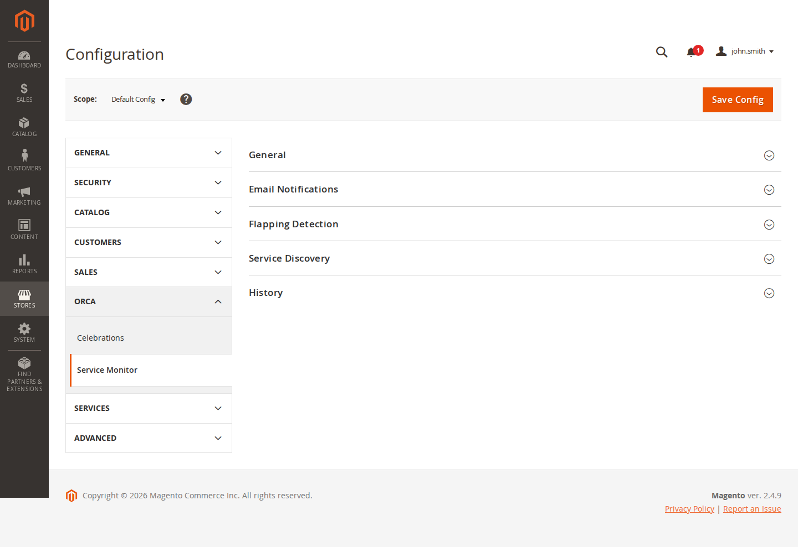
Go to System › Service Monitor › Monitors. The grid shows the status, type, target, last check, response time and 30 day uptime bars of every monitor, with filters and mass actions to enable, disable or delete monitors.
| Status | Meaning |
|---|---|
| Up | The last check succeeded. |
| Down | The check failed the configured number of consecutive times. |
| Degraded | Up, but slower than its threshold or with an SSL certificate about to expire. It doesn't count as downtime. |
| Pending | Not checked yet, or failing but not confirmed yet. |
Click Add New Monitor. The form shows only the fields of the selected check type.
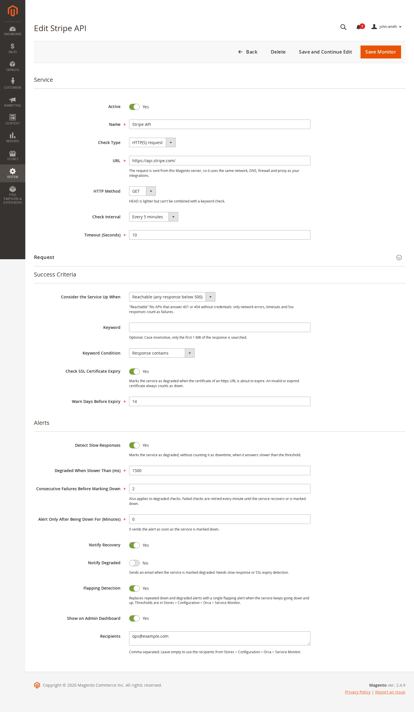
| Field | Description |
|---|---|
| Active, Name | Inactive monitors are not checked. |
| Check Type | HTTP(S), TCP port or DNS record. |
| URL, HTTP Method | HTTP: the URL to request, with GET or HEAD. HEAD is lighter but can't be combined with a keyword check. |
| Host, Port | TCP: the service is up when the server accepts the connection, e.g. 3306 for MySQL or 6379 for Redis. |
| Host, Record Type, Expected Value | DNS: the record must resolve. With an expected value, one of the records must have exactly that value (TXT records only need to contain it). |
| Check Interval, Timeout | From every minute to every 60 minutes; timeout in seconds. |
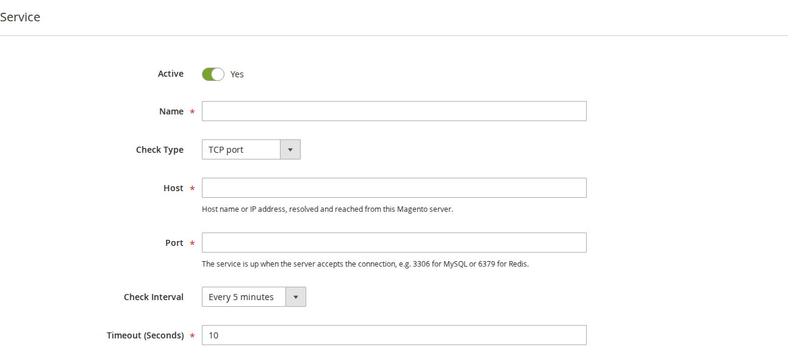
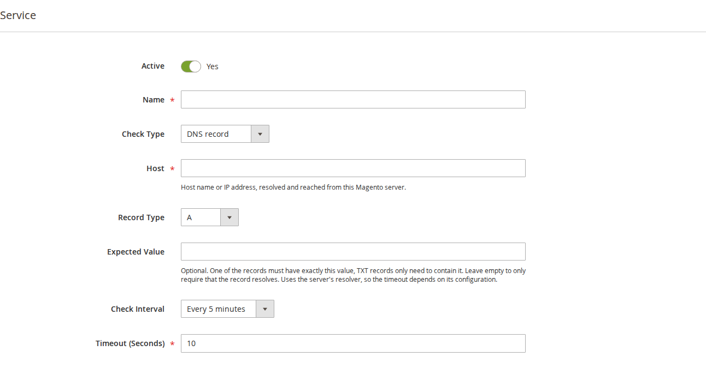
| Field | Description |
|---|---|
| Request Headers | Optional, one per line as Name: value, e.g.
X-Api-Key: abc123. Stored encrypted. |
| Authentication | None, Basic (username and password) or Bearer token. The password or token is stored encrypted and never shown again; leave the field as is to keep it. |
| Field | Description |
|---|---|
| Consider the Service Up When | Reachable: only network errors, timeouts and 5xx
responses are failures; fits APIs that answer 401 or 404 without credentials. Expected status
codes: e.g. 200,204 or 200-299. |
| Keyword, Keyword Condition | Optional text the response must or must not contain, case insensitive, within the first 1 MB. |
| Check SSL Certificate Expiry | Optional, https URLs: degraded when the certificate expires within the configured days. An invalid or expired certificate always counts as down. |
| Field | Description |
|---|---|
| Detect Slow Responses | Optional: degraded when the service answers slower than the threshold in milliseconds. |
| Consecutive Failures Before Marking Down | Also applies to degraded checks. Failed checks are retried every minute until the service recovers or is marked down. |
| Alert Only After Being Down For (Minutes) | 0 sends the alert as soon as the service is marked down. |
| Notify Recovery, Notify Degraded | Recovery email with the downtime; degraded email (needs slow response or SSL expiry detection). |
| Flapping Detection | Optional: replaces repeated alerts with a single flapping email. See section 9. |
| Show on Admin Dashboard | Optional: lists the monitor in the dashboard widget. |
| Recipients | Comma separated. Empty uses the recipients of the configuration. |
Click View in the grid to see the current status, the target, the last error, the uptime for 24 hours, 7, 30 and 90 days, the 90 day uptime bars, the response time of the last 24 hours, the incident log and the latest checks. Check Now runs the check immediately.
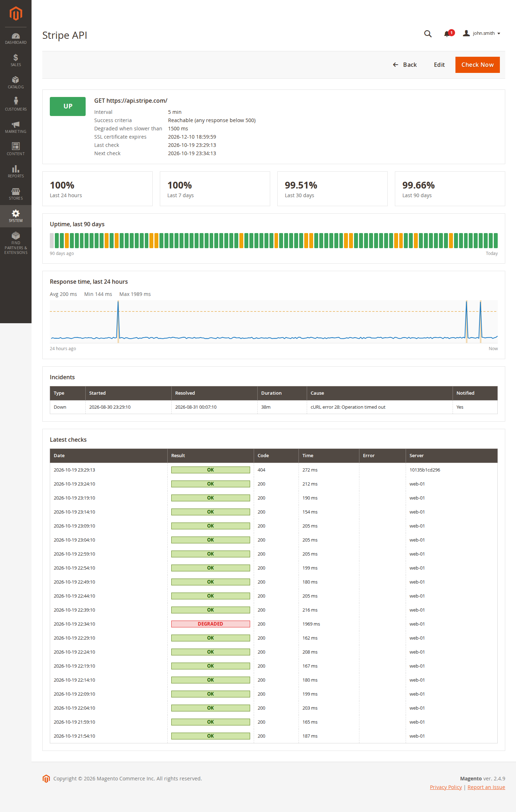
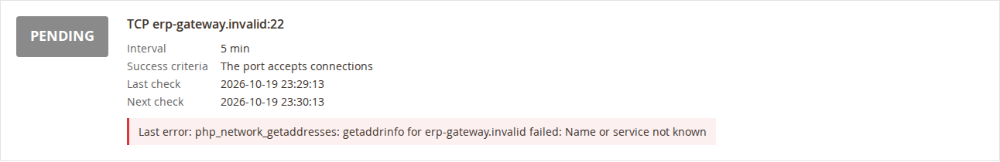
Click Discover Services in the monitors grid. The module lists the services your store already
uses, read from app/etc/env.php and the configuration:
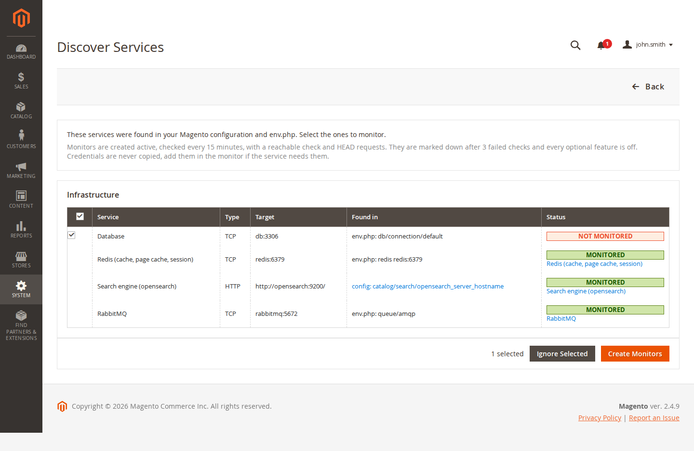
Select the services and click Create Monitors, or ignore the ones you don't want suggested again. Created monitors use a light setup: a reachable check with HEAD requests, the interval from the configuration, 3 failures before marking down and every optional feature off. Credentials are never copied.
A service already monitored links to its monitor. When the configuration changes, for example a new RabbitMQ host, the service is flagged as Configuration changed. Monitors are never updated automatically.
Orca\ServiceMonitor\Model\Discovery\DetectorInterface, registered in the detectors
argument of Orca\ServiceMonitor\Model\Discovery\Discovery in di.xml.Go to System › Service Monitor › Maintenance Windows to schedule planned downtime. During a window the checks still run and are recorded, but they don't change the status, count for uptime or send alerts.
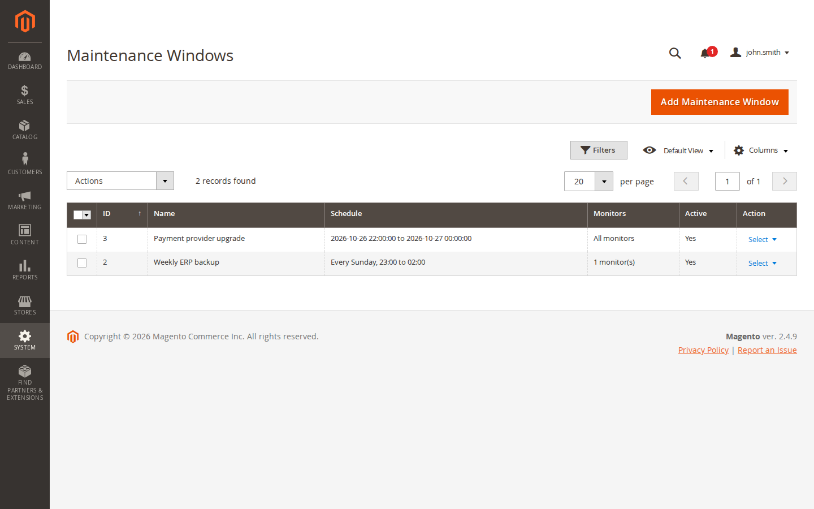
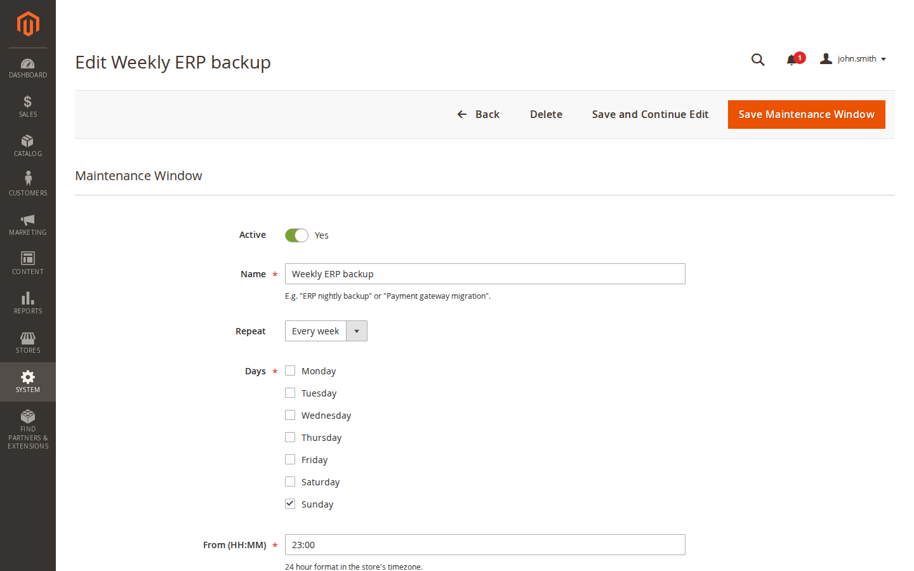
| Field | Description |
|---|---|
| Repeat | Once: between a start and an end date and time. Every week: on the selected days, between two times in the store timezone. The range can cross midnight, e.g. 23:00 to 02:00. |
| All Monitors, Monitors | The window applies to the selected monitors, or to all of them when All Monitors is enabled. |
A monitor is marked down after the configured consecutive failures, which opens an incident. The down email is sent once the incident is older than the monitor's alert delay, and the recovery email when a check succeeds again, including the downtime.
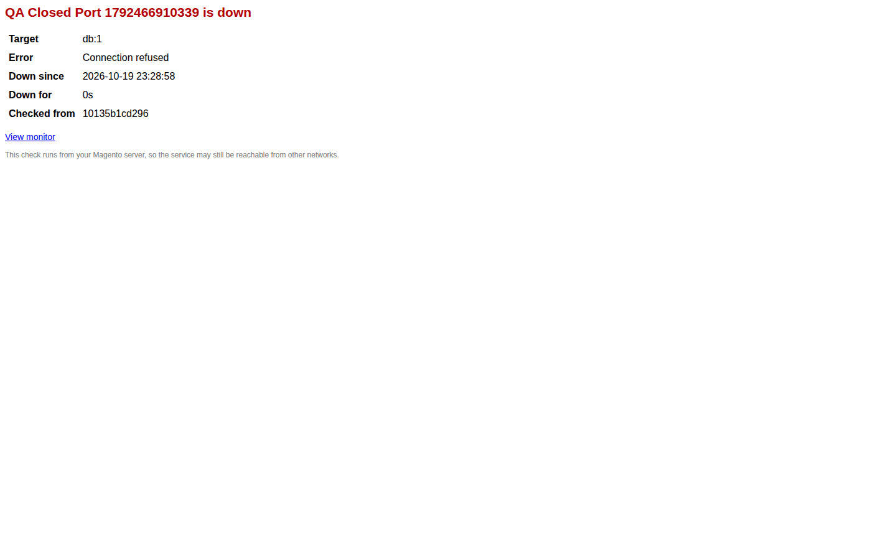
With slow response detection or SSL expiry detection enabled, a monitor can be marked degraded. It is confirmed with the same consecutive check threshold, opens its own incident and doesn't count as downtime. The degraded email is optional per monitor.
When a monitor with flapping detection keeps going down and up (by default 4 incidents within 60 minutes), its down and degraded emails are replaced by a single flapping email until the status is stable for a whole window. A down alert still pending at that point is then sent.
Monitors with Show on Admin Dashboard enabled are listed at the bottom of the admin dashboard, problems first, with their 30 day uptime. The widget is only shown to admin users who can view monitors, and it can be turned off in General › Show Dashboard Widget.
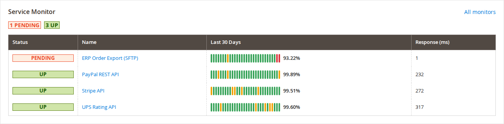
# Run the checks that are due
bin/magento orca:service-monitor:run
# Check specific monitors right away
bin/magento orca:service-monitor:run --id=3 --id=5
# Check every active monitor right away
bin/magento orca:service-monitor:run --all
# Run the module's cron group
bin/magento cron:run --group=orca_service_monitorAssign these resources to admin roles in System › Permissions › User Roles:
| Resource | Allows |
|---|---|
| Service Monitor › View Monitors | View monitors |
| Service Monitor › View Monitors › Manage Monitors | Create, edit, delete and check monitors |
| Service Monitor › Maintenance Windows | Manage maintenance windows |
| Stores › Configuration › Service Monitor Settings | Change the configuration |
The orca_service_monitor_run job runs every minute in the orca_service_monitor cron
group, in its own process, and checks the monitors that are due. HTTP and TCP checks run concurrently, so a slow
service doesn't delay the others or other cron jobs. Monitors are checked type by type (HTTP, TCP, then DNS).
DNS lookups use the server's resolver, whose timeout comes from /etc/resolv.conf.
Each check is stored with the hostname of the server that ran it. Individual checks are kept for the configured days, while daily summaries feed the uptime bars for longer.
Installed with Composer:
bin/magento module:uninstall Orca_ServiceMonitor --remove-dataInstalled manually:
bin/magento module:disable Orca_ServiceMonitor
rm -rf app/code/Orca/ServiceMonitor
bin/magento setup:upgrade--remove-data drops the module tables (monitors, check history, daily summaries, incidents and
maintenance windows) and its configuration. Without it, and after a manual uninstallation, the data is kept
so your monitors are still there if you install the module again.
| Problem | Solution |
|---|---|
| Admin message: the checks haven't run | The Magento cron isn't running or is not running the
orca_service_monitor group. Check the crontab of the Magento user and run
bin/magento cron:run --group=orca_service_monitor to test it. |
| A service is down in the module but up from your computer | That is what the module is for: the Magento server can't reach it. Check the firewall, DNS, proxy, IP whitelists and CA certificates of the server. |
| No alert emails | Check that email notifications are enabled, that the monitor or the configuration has recipients, the alert delay of the monitor, and that Magento can send email. |
| An API is marked down because it answers 401 or 404 | Use Reachable as success criteria, or add the authentication and the expected status codes. |
For questions, bug reports or feature requests, contact us at orcashop.team@gmail.com. Please include your Magento and PHP versions and the module version.